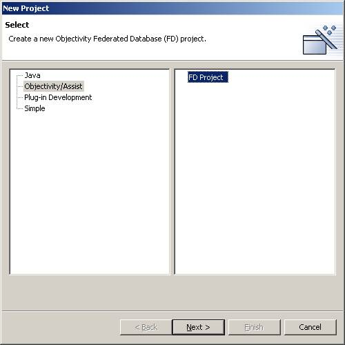
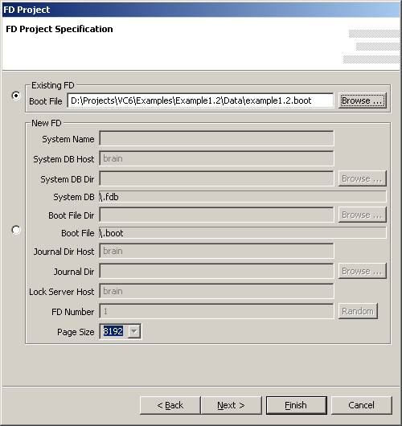
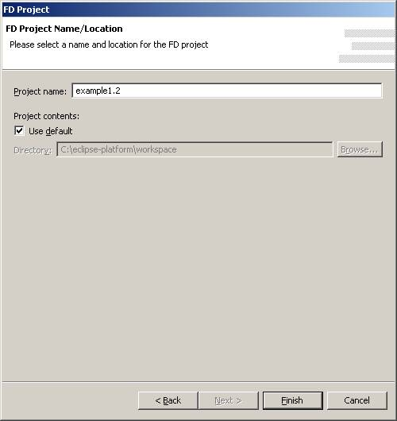

Make sure you are in the FD Project Explorer Perspective. If not select the
Window pull-down menu, select Open Perspective, select Other, then select
Objectivity/Assist. This will open the FD Project Explorer Perspective. Create a
new FD Project by selecting File/New/Project from the File pull-down menu..
Select Objectivity/Assist and then FD Project and hit the Next button.

Follow the instructions. When you get to the FD Project Specification window select Existing FD, and browse for the Boot File Example1.2.boot in installdir\Examples\Example1.2\Data.

The hit Next.

Then hit finish.